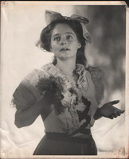
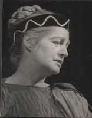

Mechthild Harkness

Mechthild Harkness was born in Switzerland and emigrated with her family to the United States in 1923. From her earliest years Eurythmy and dramatic performances were an integral part of her daily life. At college she majored in drama and interpretive dancing. She then worked for a time at Daykarhanova’s School for the Stage in New York. Her interest in music led her to the Julliard Institute and the opera department of the Mannes Music School. During the war years she completed her training in Eurythmy whilst participating in a variety of student opera productions.
In 1946 she joined the company of Alan Harkness, with which she toured the West Coast in repertory. She also taught in the High Valley Theatre School in Ojai, California. From 1949 to 1951 she and Alan Harkness toured Europe with their program, Great Moments from Shakespeare. In February of 1951 their son was born.
After the sudden death of her husband in 1952, Mechthild created her solo performance of Sophocles’ Antigone, with which she toured America, England and Switzerland. In 1954 she became a permanent member of the acting ensemble at the Goetheanum in Switzerland, performing, teaching and producing over many years.

In 1967 Mechthild undertook to set up a speech and drama department at Emerson College in Sussex, England. In 1969 she and her son moved to Australia where she was engaged as voice coach for the Old Tote Theatre Company. In the early 70’s she recreated her performance of Antigone for Sydney audiences. During this time she also established her own Speech and Drama school, work which, despite ongoing health and other difficulties, she continued in various forms until her death in 1986.
Mechthild’s legacy lives on in the creative life of her many students. On the evening of July 28th, three nights after her death, an informal evening service was held at The Harkness Studio where a vigil was being kept. Among the many offerings of poetry, music and story on that night was the following, by student Daniel Stokes. Daniel had heard this tale from Laurens van der Post, who in turn had heard it from an African bushman.
A young hunter went to the village water hole one day to quench his thirst. As he bent over the pool the reflection of a beautiful Great White Bird appeared in the water. He looked up quickly to catch sight of the bird, but it had vanished. The unrest that the young hunter felt after this experience was so great that he could no longer feel at peace within himself, nor could he remain content with village life. He simply had to find the bird. The journey was a long and difficult one, until at last, as an old man, he climbed the mountain where the Great White Bird was known to roost. Finding that he did not have the strength to reach the summit, he fell prey to despair. Yet in that moment he looked up, and as he did so he noticed one small white feather floating down towards him. He caught it in his hand and in that moment he died, content at last. One feather from the Great White Bird was enough.